Research question & evidence研究问题与证据
Define the observable, review sources and expose assumptions or missing measurements.明确观测量、核对来源，指出假设与缺失测量。
Skill reference ↗Skill 说明 ↗EVIDENCE · MODELS · FEEDBACK科学证据 · 数值模型 · 实验反馈
A modular LLM-assisted research framework connecting scientific evidence, numerical modelling and experimental feedback through reusable Skills.以可复用 Skill 连接科学证据、数值建模与实验反馈的模块化 LLM 辅助研究框架。
Bring a research question, your available data and practical constraints. The host selects reviewed Skills, numerical tools calculate, and researchers decide how to validate the resulting analyses and proposals.提出研究问题，提供已有数据与实际约束。宿主选择已审核的 Skill，数值工具负责计算，研究者决定如何验证分析结果与建议。
An overall workflow, with module-specific support—not a claim that every module automatically completes the full loop.这是总体工作流，具体支持范围取决于模块，不代表每个模块都已自动完成整条链。 Check capability status查看能力状态


Define the observable, review sources and expose assumptions or missing measurements.明确观测量、核对来源，指出假设与缺失测量。
Skill reference ↗Skill 说明 ↗Fit the declared response and inspect grouped validation within the chosen application.拟合已声明响应，在所选应用范围内检查分组验证。
Skill reference ↗Skill 说明 ↗Run lightweight calculations and assess candidates only within supported model domains.执行轻量计算，在模型支持范围内分析候选。
Skill reference ↗Skill 说明 ↗Connect observations with evidence-linked hypotheses and distinguishing checks.将现象与有证据的假设、区分检查相联系。
Skill reference ↗Skill 说明 ↗Suggest constrained trials or calibration measurements for researcher review.提出符合约束的候选试验或标定测量，供研究者审核。
Skill reference ↗Skill 说明 ↗Compare frozen predictions and use the module's validated update path.比较冻结预测，按模块已实现的验证规则更新模型。
Skill reference ↗Skill 说明 ↗Two implemented examples illustrate the framework. They are starting points with their own scientific scope, not a universal materials model.两个已实现案例展示框架如何工作。它们各有科学适用范围，不构成通用材料模型。
APPLICATION WORKFLOW应用工作流
Separate geometric-width and concentration-sigma routes, with calibration, constrained candidate trials, feedback comparison and guarded model updates.分开的几何线宽与浓度 sigma 路径，包含标定、约束候选试验、反馈比较与受验证条件控制的模型更新。
Run the local example运行本地案例 · Workflow & run records工作流与运行记录INDEPENDENT MODELLING MODULE独立建模模块
Two-level lightweight modelling, calibration, predeclared model refinements and limited sensitivity analysis within supported conditions.两级轻量建模、标定、预声明模型修正，以及受支持条件内的有限敏感性分析。
Run the local example运行本地案例 · Module guide ↗模块指南 ↗Bundled numerical examples use synthetic data. Materials design and process improvement are research uses to investigate, not demonstrated automatic optimisation of arbitrary materials.包内数值案例使用合成数据。材料设计与工艺改进是可研究的用途，不代表已经验证了任意材料的自动优化。
| Research inputs研究输入 | Inspectable outputs可核查输出 |
|---|---|
| Research question, observable, goals and constraints研究问题、观测量、目标与约束 | Task scope, assumptions and requests for missing data任务范围、假设与补充数据请求 |
| Literature and source locations文献资料与原文位置 | Evidence records with conditions and references附带条件和引用的证据记录 |
| Measurements, units, sample identities and declared partitions测量、单位、样品身份与预声明分区 | Calibration diagnostics, numerical analyses and model comparisons标定诊断、数值分析与模型比较 |
| Parameter bounds, budget and external experimental results参数范围、预算与外部实验结果 | Module-supported candidate suggestions, comparisons and versioned reports模块支持的候选建议、比较与版本化报告 |
Outputs depend on the selected module. A candidate is a proposal for human review, not an equipment command.输出取决于所选模块；候选方案供研究者审核，不是设备指令。
Overview, workflow and capabilities. No installation required.了解总览、研究流程与能力，无需安装。
Choose VPP–DIW or foam calculations. Local scripts do not automatically connect to an LLM.选择 VPP–DIW 或泡沫计算；本地脚本不会自动连接 LLM。
Use reviewed Skills in a host with file and terminal tools.在具备文件与终端工具的宿主中使用经过审核的 Skill。
Package guide: what each directory is for文件包说明：各目录是什么、何时使用 · Release notes发布说明
| Area领域 | Status and boundary状态与边界 | Evidence实现依据 |
|---|---|---|
| VPP–DIW workflowVPP–DIW 工作流 | Executable已有可执行模块 Calibration, bounded proposals, frozen comparisons and guarded multi-round updates. Fixed demos are deterministic and synthetic.标定、约束候选、冻结比较与受验证条件控制的多轮更新；固定 demo 是确定性合成演示。 | Runtime + round tools运行时与轮次工具 Round tools轮次工具 |
| Polymer foam modelling聚合物泡沫建模 | Independent executable独立可执行入口 Standalone model analysis; no integrated automatic planner or validated full process-to-performance chain.独立模型分析；未接入自动规划器，未验证完整工艺到性能预测链。 | Module workflow模块工作流 |
| Cause analysis原因分析 | Host-assisted需 LLM 宿主执行 Supplementary host analysis; not automatically included in planner ranking or formal runtime audit/reporting.宿主补充分析；不会自动进入规划排序或正式运行时审计／报告。 | Integration contract接入约定 |
| Skills & literatureSkill 与文献发现 | Host + reviewed registry宿主与已审核登记 Runtime selection is local. Fresh literature/GitHub retrieval and new tool review are host responsibilities; seed entries are only candidates.运行时选择来自本地。新文献／GitHub 检索及新工具审核由宿主负责；种子条目只是候选线索。 | Runtime registry运行时登记 |
| Broader applications更广泛应用 | Extension opportunities未来可扩展用途 New materials and research objectives need suitable evidence, models and adapters.新材料与研究目标需要适用证据、模型和适配器。 | Implemented scope已实现范围 |
Prediction intervals, Bayesian optimisation, commercial solvers and device control are not implemented. Synthetic demos do not establish autonomous LLM research, material improvement or superiority over ordinary modelling. Technical guides retain the full constraints.预测区间、贝叶斯优化、商业求解器和设备控制不是现成功能。合成演示不证明 LLM 自主科研、材料改善或优于普通建模；完整约束保留在技术指南中。